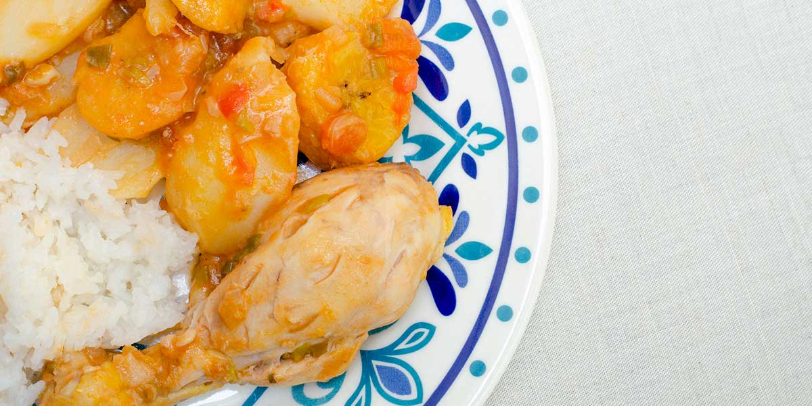

Sudado de pollo

What is a Sudado?
Classified by experts as a "very Andean" dish, the Sudado de pollo is a recipe that originates from the mixture of indigenous and European gastronomy. Chicken, beef and pork are the main meats in this preparation, which traditionally comes fused with tubers such as potato, cassava and tomato.
Ingredients
- 1 tablespoon of vegetable oil (14 g)
- 1 crushed garlic clove (3 g)
- 1 tomato without skin, finely chopped (123 g)
- 2 long onion stalks finely chopped (30 g)
- 4 chicken legs (800 g)
- 1 cup water (250 ml)
- 1 pound of pastusa potato, peeled and halved (500 g)
Steps
- In a high-bottomed pot, sauté garlic, tomato and onion in very hot oil for 4 minutes.
- Add the chicken, waterand potatoes.
- Leave it on the heat for 20 minutes until it is completely cooked.
- After the time is over, remove from the heat, serve and accompany with the salad.
Back to all recipes